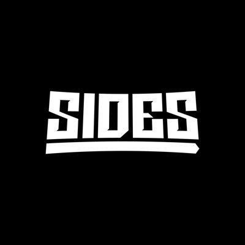
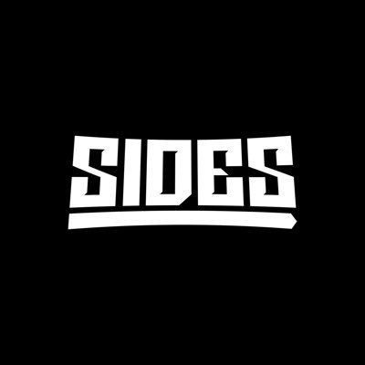

The Sidemen
Who are the Sidemen?
The Sidemen are a UK YouTube group of friends
who have used social media to create a career for themselves through determination and persistence.
The Growth of The Sidemen
With the growth of social media in the last decade or so, many successful careers have been produced by it. The Sidemen are
a perfect example of this. The Sidemen, originally The Ultimate Sidemen, started as seven different individual channels, each of the
members' personal channels in 2013. The group consists of KSI, W2S, Miniminter, Behinzga, TBJZL, Vikkstar123, and ZerkkaHD.
They mostly posted GTA, football(soccer), and FIFA videos in their early career. They started building popularity from their collaborations
with each other and soon some of them moved into a house together known as the Sidemen House. Additionally,
in 2014, they started their own clothing company called Sidemen Clothing. Then in 2016 they decided to
create a joint channel which would be called The Sidemen. Each member of the group shouted out the group channel
to grow its popularity(subscribers). In three days after the launch of the channel, The Sidemen YouTube channel gained over
a million subscribers which at the time was the fastest channel to hit this milestone. They started making more moves
in football and making videos together, but the real boost in popularity came during their disstrack season.
Their disstracks, posted on their individual channels, propelled them into a wider audience when at the time they were entangled
with popular American YouTubers. Later, it was revealed and confirmed to be fake disses, but the popularity gained from
the events did not dissipate. Then in 2018, the Sidemen revealed they will be starting Sidemen Sundays, which is where every week
they post a video on Sunday. This gained them millions upon millions of viewers. Sidemen Sundays still go on and many look
out for them every Sunday. Now with over 18 million subscribers and insane growth with their clothing company, they have been able
to collab with brands and sports teams such as Arsenal FC and newest one Hot Wheels. Additionally, they hold big
events like a charity football match where it is Sidemen FC vs. YouTube Allstars. Last year their football match got over 2 million
concurrent views on the live stream which is extremely hard to do. Not only do the Sidemen have their own clothing brand
, but they also have their own food business, vodka, and podcasting app (along with three other active collaborative YouTube channels).
Their brand names are Sides, XIX Vodka, and Side+. From all of this and still running their individual channels they are millionaires.
They have many more achievements both together and individually that any other YouTube group or YouTuber can only dream of having.
They are an example of true organic growth to stardom that came from the rise of social media.
Sidemen Channels
Sidemen Products
 
